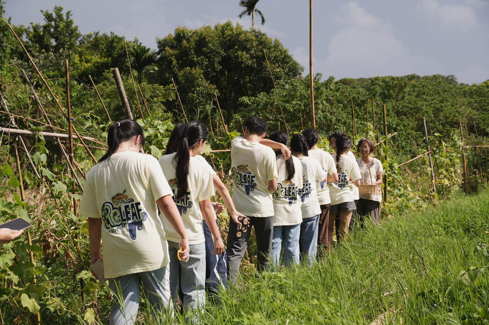
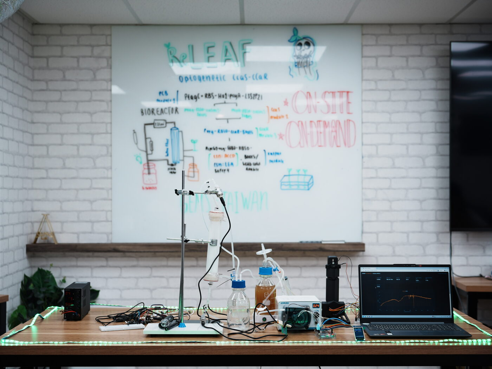

1
Green light
The base. The whole bench lies under the farm, reactor in the middle; the light rests on it.
Open
2
Farm first
No light on arrival. The farm holds for three seconds; the light switches on only when you move.
Open
3
Right shade
A 15% black fade on the right, and the reactor standing in it, where the queue is heading.
Open
4
Dark focus
No green. A dark lens, larger at the centre, and the farm falling away to black at the edges.
Open
5
Scroll to light
The first screen is the farm, whole. Scrolling opens the light from the reactor until the bench fills the screen.
OpenFrom Marburg, and away from it.
Marburg 2024 put two photographs in one frame and cut a small soft hole in the top one wherever the cursor went. Their lower layer was a meadow of dandelions, so any spot the hole found was full of flowers.
Ours is one machine on one bench. So each study either makes the window large enough to hold the reactor, or knows where the reactor is and brings it to the window. And the two layers mean something new: not problem and answer, but the same team in two places.
The two photographs.

